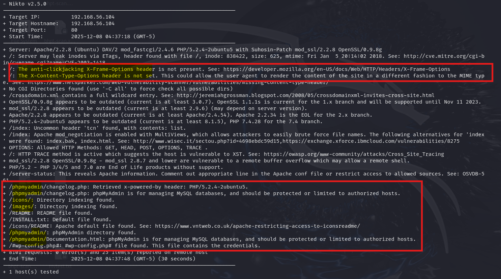

웹 취약점 스캐닝이란?
- 자동화된 프로그램을 이용하여 웹사이트의 여러 가지 정보를 수집하고 이 정보를 바탕으로 어떤 취약점이 있는지 알아내는 과정이다.
TIP
- 웹 취약점 스캐너를 이용하면 많은 정보를 수집할 수 있음. 단 많은 트래픽을 유발하므로 반드시 담당자의 허가를 받고 진행해야 함
칼리 리눅스에 설치되어 있는 nikto라는 프로그램을 쓸 거임 nikto를 쓰게 되면 중요한 정보를 쉽게 수집할 수 있음.

<노출된 정보>
○ 위와 같이 서버 헤더 및 PHP, 아파치, mod_ssl 버전
○ 보안 관련 헤더
○ 허용된 메소드 목록 정보
○ /icons/, /images/ 경로에서 디렉터리 인덱싱 취약점 발견
○ phpmyadmin 디렉터리
- 이와 같은 정보들은 모의해킹을 수행하는 과정에서 향후 공격에 중요한 단서가 될 수 있음.
- 이 중에서도 오래된 버전을 사용하는 소프트웨어에는 이미 알려진 취약점들이 존재할 수 있는데 이 취약점을 활용하여 쉽게 공격을 성공할 수 있는 경우가 있음